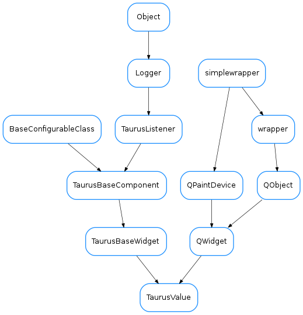

TaurusValue¶

-
class
TaurusValue(parent=None, designMode=False, customWidgetMap=None)[source]¶ Bases:
PyQt4.QtGui.QWidget,taurus.qt.qtgui.base.taurusbase.TaurusBaseWidgetInternal TaurusValue class
Warning
TaurusValue(and any derived class from it) should never be instantiated directly. It is designed to be instantiated by aTaurusFormclass, since it breaks some conventions on the way it manages layouts of its parent model.-
allowWrite¶
-
applyConfig(configdict, **kwargs)[source]¶ extending
TaurusBaseWidget.applyConfig()to restore the subwidget’s classesParameters: configdict ( dict) –See also
TaurusBaseWidget.applyConfig(),createConfig()
-
createConfig(allowUnpickable=False)[source]¶ extending
TaurusBaseWidget.createConfig()to store also the class names for subwidgetsParameters: alllowUnpickable ( bool) –Return type: dict<str,object>Returns: configurations (which can be loaded with applyConfig()).
-
extraWidgetClass¶
-
getCustomWidgetMap()[source]¶ Returns the map used to create custom widgets.
Return type: dict<str,QWidget>Returns: a dictionary whose keys are device type strings (i.e. see PyTango.DeviceInfo) and whose values are widgets to be used
-
getDefaultReadWidgetClass(returnAll=False)[source]¶ Returns the default class (or classes) to use as read widget for the current model.
Parameters: returnAll ( bool) – if True, the return value is a list of valid classes instead of just one classReturn type: classorlist<class>Returns: the default class to use for the read widget (or, if returnAll==True, a list of classes that can show the attribute ). If a list is returned, it will be loosely ordered by preference, being the first element always the default one.
-
getDefaultWriteWidgetClass(returnAll=False)[source]¶ Returns the default class (or classes) to use as write widget for the current model.
Parameters: returnAll ( bool) – if True, the return value is a list of valid classes instead of just one classReturn type: classorlist<class>Returns: the default class to use for the write widget (or, if returnAll==True, a list of classes that can show the attribute ). If a list is returned, it will be loosely ordered by preference, being the first element always the default one.
-
getSwitcherClass()[source]¶ Returns the TaurusValue switcher class (used in compact mode). Override this method if you want to use a custom switcher in TaurusValue subclasses.
-
handleEvent(evt_src, evt_type, evt_value)[source]¶ Reimplemented from
TaurusBaseWidget.handleEvent()to update subwidgets on config events
-
hasPendingOperations()[source]¶ self.getPendingOperations will always return an empty list, but still self.hasPendingOperations will look at the writeWidget’s operations. If you want to ask the TaurusValue for its pending operations, call self.writeWidget().getPendingOperations()
-
labelConfig¶
-
labelWidgetClass¶
-
modifiableByUser¶ whether the user can change the contents of the widget
Return type: boolReturns: True if the user is allowed to modify the look&feel
-
parentModelChanged(parentmodel_name)[source]¶ Invoked when the parent model changes
Parameters: parentmodel_name ( str) – the new name of the parent model
-
preferredRow¶
-
readWidget(followCompact=False)[source]¶ Returns the read widget. If followCompact=True, and compact mode is used, it returns the switcher’s readWidget instead of the switcher itself.
-
readWidgetClass¶
-
setCustomWidgetClass(classID)[source]¶ substitutes the current widget by a new one. classID can be one of: None, ‘Auto’, a TaurusWidget class name, or any class
-
setCustomWidgetMap(cwmap)[source]¶ Sets a map map for custom widgets.
Parameters: cwmap ( dict<str,QWidget>) – a dictionary whose keys are device class strings (seePyTango.DeviceInfo) and whose values are widget classes to be used
-
setExtraWidgetClass(classID)[source]¶ substitutes the current widget by a new one. classID can be one of: None, ‘Auto’, a TaurusWidget class name, or any class
-
setLabelWidgetClass(classID)[source]¶ substitutes the current widget by a new one. classID can be one of: None, ‘Auto’, a TaurusWidget class name, or any class
-
setModel(model)[source]¶ extending
TaurusBaseWidget.setModel()to change the modelclass dynamically and to update the subwidgets
-
setReadWidgetClass(classID)[source]¶ substitutes the current widget by a new one. classID can be one of: None, ‘Auto’, a TaurusWidget class name, or any class
-
setUnitsWidgetClass(classID)[source]¶ substitutes the current widget by a new one. classID can be one of: None, ‘Auto’, a TaurusWidget class name, or any class
-
setWriteWidgetClass(classID)[source]¶ substitutes the current widget by a new one. classID can be one of: None, ‘Auto’, a TaurusWidget class name, or any class
-
unitsWidgetClass¶
-
writeWidget(followCompact=False)[source]¶ Returns the write widget. If followCompact=True, and compact mode is used, it returns the switcher’s writeWidget instead of None.
-
writeWidgetClass¶
-